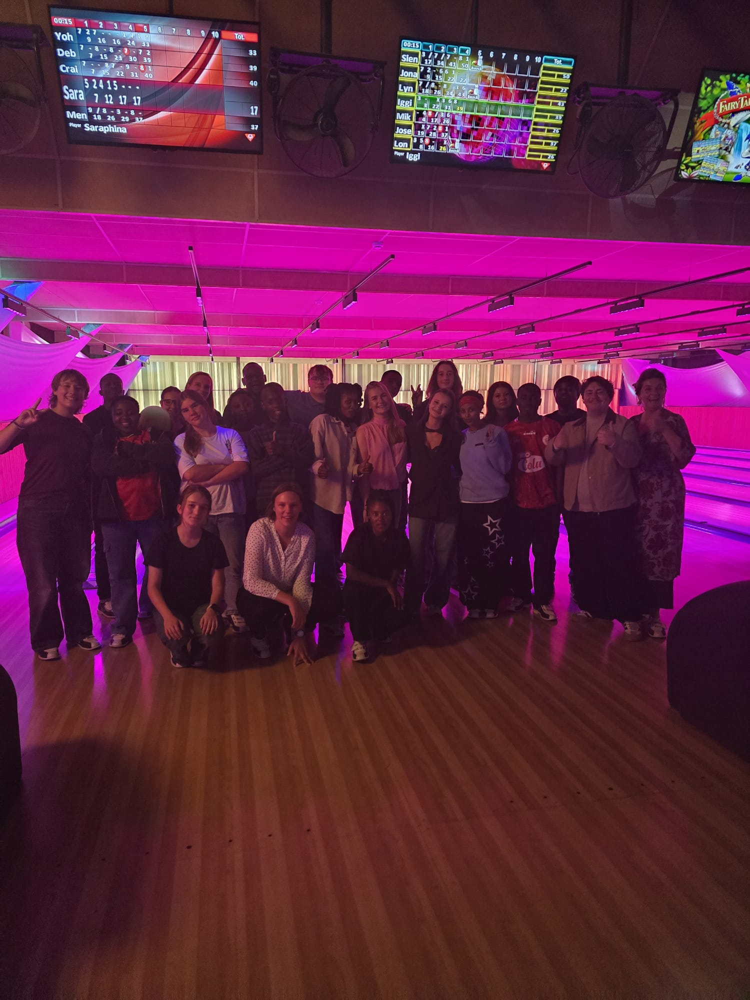
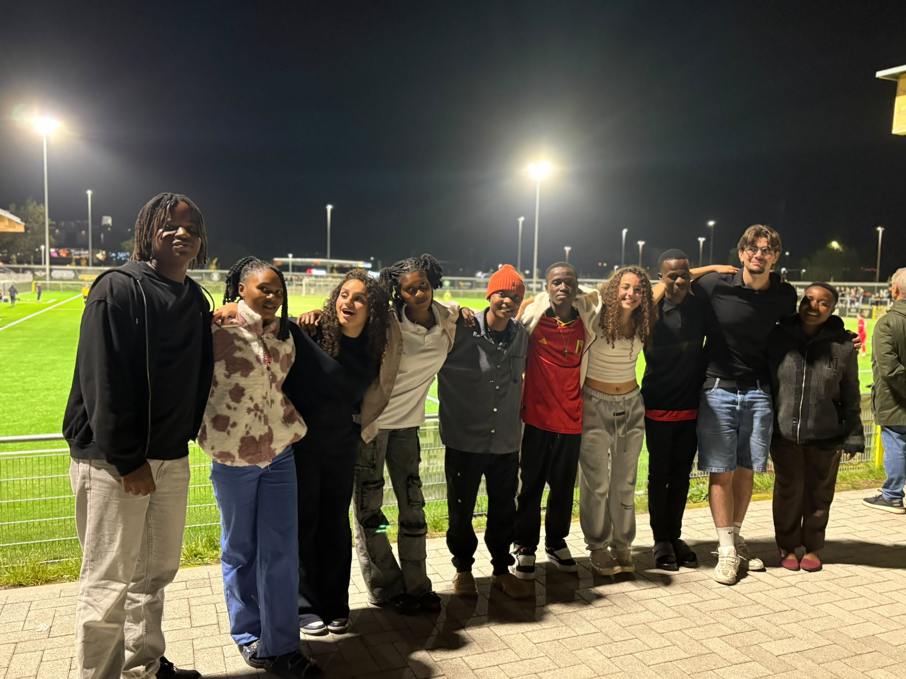

{{ t.brand }}
Kiswahili
English
{{ forLabel }}
{{ heroName }}
{{ heroTitle }}
{{ heroSub }}
{{ t.scroll }}

{{ t.msgTitle }}
{{ m.initial }}
{{ m.author }}
{{ m.text }}
{{ m.btnLabel }}
{{ t.galTitle }}
{{ t.galHint }}
{{ t.groupTitle }}
{{ t.students }}
{{ s.name }}
· {{ t.you }}
{{ s.name }}
{{ t.teachers }}
{{ s.name }}
· {{ t.you }}
{{ s.name }}
{{ closeTitle }}
{{ t.closeSub }}
